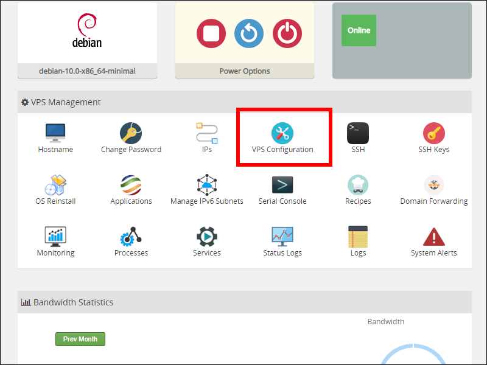
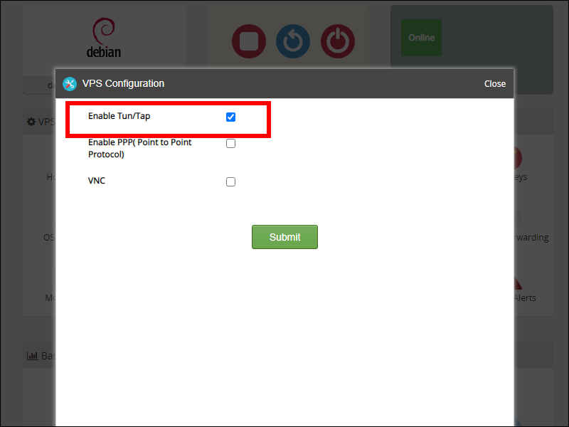

OpenVPN on NAT IPv4 OpenVZ VPS
Giving a virtual private server (VPS) only a Network Address Translation (NAT) IPv4 address makes the server astonishingly affordable.
There’s only a fixed number of IPv4 addresses. All 4.3 billion IPv4 addresses have now been exhausted, and their cost has risen to the point where an IPv4 address can be a major part of the cost of a low-end server.
Virtualizing with OpenVZ or LXC gives further cost savings. The Linux kernel is shared between many virtual machines, so each machine needs less memory of its own. You can create a useful server with as little as 128 MB of RAM.
By sharing a single IPv4 address and reducing the RAM, providers can offer you a server for as little as $4/year. The NAT IPv4 providers I’ve heard of are MrVM, Inception Hosting, Gullo’s Hosting, and WebHorizon. There may be others.
This tutorial shows you how to install OpenVPN on a NAT IPv4 OpenVZ VPS, using the Nyr OpenVPN installer script. The procedure for the Angristan OpenVPN installer script is similar.
OpenVPN has pros and cons. The pros are that it has been field-tested for many years, its security has been externally audited, and clients exist for all the common platforms. The main con is that it is blocked in several countries.
If you are going to follow along with this tutorial, you should also check that your VPS provider’s IP address(es) are reachable from your country. NAT IPv4 servers are very popular, and at least one country has blocked the IP addresses of at least one provider.
1. Server
1.1. Enable TUN/TAP
TUN and TAP are interfaces that exist only in software.
- A TUN (short for TUNnel) interface operates at level 3 of the Open Systems Interconnection (OSI) model, the packet routing level.
- A TAP (short for Test Access Point) interface operates lower down, at level 2 of the OSI model. You must use TAP if you want to build a network bridge.
In this tutorial we will use a TUN interface.
While OpenVZ does support VPN inside a container, you must explicitly enable TUN/TAP for the container. Most providers allow you to do this from their control panel. The appearance of the control panel will vary from provider to provider. On MrVM, it looks as shown below. Scroll down to the VPS Management section, and click VPS Configuration.
In the VPS Configuration box, check Enable Tun/Tap.
Click Submit. Wait while TUN/TAP is enabled.
1.2. Install Legacy Iptables
There is a special consideration if you are running Debian 10. The distribution is transitioning between iptables and nftables. Although it looks like you’re getting iptables, it’s actually nftables under the hood. To set it back to pure iptables, SSH into the server, and switch to the legacy version of iptables:
apt install iptables
update-alternatives --set iptables /usr/sbin/iptables-legacy
update-alternatives --set ip6tables /usr/sbin/ip6tables-legacy
1.3. Reboot
After enabling TUN/TAP and installing legacy iptables, you should reboot:
reboot
1.4. Check Kernel
We’ll do some final checks before installing OpenVPN. Check that the kernel module tun is loaded:
lsmod | grep tun
It should show that the module tun is loaded. Finally, issue the command:
cat /dev/net/tun
You should see a message, File descriptor in bad state. That sounds like an error, but it is in fact what you need. If you see a message, No such
device, then TUN/TAP has not been enabled on your VPS.
1.5. Download Script
Download the Nyr OpenVPN installer script from GitHub:
wget --no-check-certificate https://git.io/vpn -O openvpn-install.sh
Before you run the script:
- Make a note of the public IP address of your server.
- A NAT IPv4 VPS typically includes only 20 ports for your use, plus one extra for SSH. Choose one of the ports allocated to your NAT IPv4 VPS that you will use for OpenVPN.
1.6. Run Script
Run the script with bash:
bash openvpn-install.sh
The exact questions the installer asks will vary, depending on the networking configuration of your VPS. The questions might cover:
- What is the public IPv4 address or hostname of the server
- Which IPv6 address should be used
- Which protocol should OpenVPN use (UDP or TCP)
- What port should OpenVPN listen on (which will have to be one of the ports allocated to your VPS)
- Which DNS server should be pushed to the clients (current system resolvers, Google, 1.1.1.1, OpenDNS, Quad9 or AdGuard)
You are also asked to enter a name for the first client. We will use as an example the name westcoast.
At the end of the script’s run, you will have a client configuration file named westcoast.ovpn (in our example). Rerun the script if you have more than
one client.
2. Clients
2.1. Download Client Configuration Files to Local PC
You need to get the configuration file on to your OpenVPN client.
The easiest way to securely download file(s) to your device(s) is to first download them to a PC on your LAN, where they will be behind a firewall. If the PC itself is not the client, you can then copy them from the PC to your final client(s).
To download to a Linux PC, go to your PC and use the scp command. For example, if your server public IP address is yy.yy.yy.yy, your
server SSH port is 321, and your client file is named westcoast.ovpn:
scp -P 321 root@yy.yy.yy.yy:westcoast.ovpn ~/Downloads/westcoast.ovpn
To download to a Windows PC, you can use the pscp.exe command that comes with PuTTY. Here is a sample command that you would enter into a Windows Command Prompt. In this example, the server public IP address is
yy.yy.yy.yy, your server SSH port is 321, and your client file is named westcoast.ovpn.
"C:\Program Files\PuTTY\pscp.exe" -P 321 root@yy.yy.yy.yy:westcoast.ovpn Downloads\westcoast.ovpn
If the PC is also your client for OpenVPN, you would use the downloaded OpenVPN configuration file directly. If a mobile device is your client, you would securely transfer the OVPN file from your PC to your mobile device.
2.2. Linux Client
Assuming you are using GNOME desktop, install the OpenVPN client as follows. On CentOS:
yum update -y
yum install NetworkManager-openvpn-gnome -y
On Debian/Ubuntu:
sudo apt update && sudo apt upgrade -y
sudo apt install network-manager-openvpn-gnome -y
After the install, do the configuration. In GNOME desktop settings, go to the Network tab. In the VPN settings, click the plus sign + to add a VPN profile. Select Import from file. Click Add.
Toggle the connection to the ON position.
2.3. Windows Client
Download the latest OpenVPN windows installer from the OpenVPN website. It will have a name
such as OpenVPN-2.5-rc2-I601-amd64.msi. Run the installer. During installation, accept the defaults.
Double-click the OpenVPN GUI on your desktop to launch OpenVPN for the first time. When you get a message to say that no configuration profiles existing yet, click OK.
Locate the OpenVPN icon in the system tray. Right click on the icon, and select Import file. Select the file you downloaded from the server. Click Open. You should see a message to say the file was imported successfully. Click OK.
Again locate the OpenVPN icon in the system tray. Right-click. Select Connect.
2.4. macOS Client
Many people use the Tunnelblick open-source VPN client. Download the macOS client software from the Tunnelblick website. Install Tunnelblick from the .dmg file in your Downloads folder.
Once Tunnelblick is running, you can control it from the Tunnelblick icon in your menu bar. Import your OpenVPN configuration file. Use the menu to Connect to the server.
2.5. Android Client
You can connect your PC to your Android phone or tablet with a USB cable. Copy the OpenVPN configuration file from your PC to your Android device.
Install the OpenVPN for Android app by Arne Schwabe.
Launch OpenVPN for Android. Initially, no OpenVPN profiles are defined. Click the plus sign to add a new OpenVPN profile. Enter a name and tap IMPORT.
After import, tap the server to make your connection request.
2.6. iOS Client
Copy your OpenVPN configuration file to your iPad or iPhone.
From the App Store, install the OpenVPN Connect app.
Once the app is installed, tap on the OVPN configuration. Choose to open it with OpenVPN. Tap Add. Tap Add again.
To connect, toggle the line for your server to the ON position.
3. Get Help and Report Issues
Here are some sources of support if you have questions or problems:
- If you have questions about OpenVPN configuration in general, consult the OpenVPN Manual
- You can ask questions about NAT IPv4 servers on the Low End Spirit forums
- You can ask questions about OpenVPN on the OpenVPN forums
- If you discover a defect in the Nyr OpenVPN installer, create an issue on its GitHub issues page
Updated 2020-10